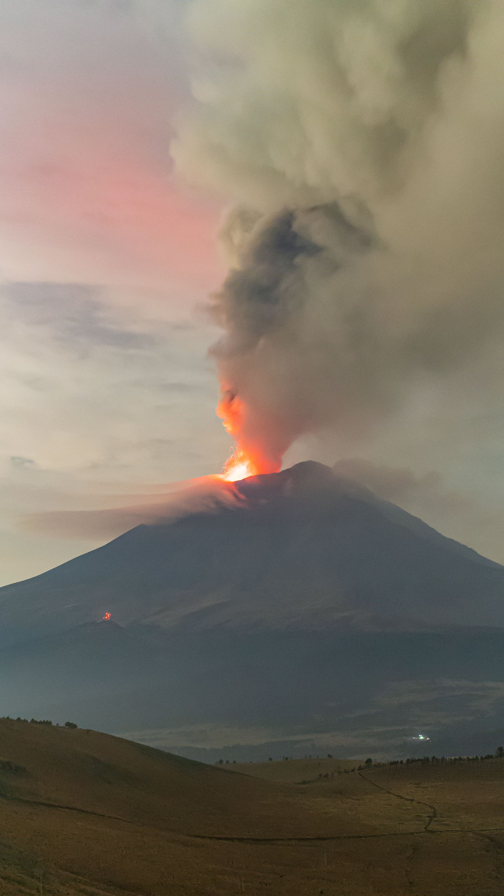
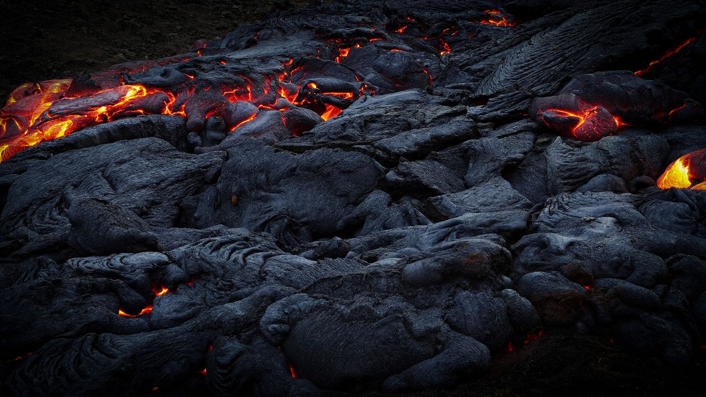

Seventeen seasons of reading the ground
I came to volcanoes through lava. My doctorate was in physical volcanology — the rheology of lava flows: how viscosity, crystallisation and slope decide where a flow goes and how fast, the physics underneath every hazard map I now draw. Fieldwork for that thesis put me on flow fields in Iceland and Hawaiʻi with a thermocouple, a notebook and strong opinions about boots.
After the doctorate I spent eight years inside a national observatory — duty rota, night calls, the works — which is where I learned the part of this job no instrument teaches: a monitoring scientist's real product is a decision somebody else has to defend. I have been independent since 2016, working for surveys, observatories and civil-protection agencies who need the reading done by someone with no institution to protect.
I have never once been disappointed by a volcano that decided not to erupt. The stand-down reports are the work I would keep, if I had to keep only one kind.
- Training
- BSc Geology · PhD Physical Volcanology
- Doctoral field
- Lava-flow rheology & dynamics
- Then
- 8 years, national observatory duty rota
- Now
- Independent since 2016
- Field base
- Catania, Sicily
- Languages
- English · Italian · German


How an engagement runs
Read the record first
Before anyone flies anywhere: the archive. Past eruption deposits, old maps, instrument history, the previous scientists' notebooks where they survive. A volcano's next move is usually a variation on one it has made before, and the record is where the variations are written down.
Walk the ground
Deposit mapping on foot, station sites chosen by standing on them. Satellite data shortlists; boots decide. This is also where the safety plan stops being a document: routes, turnaround times, and the rule that any team member can call a stop, for any reason, without having to argue it.
Instrument, then listen
Stations installed, baselines established, and then the discipline most projects underfund: listening long enough to know what normal sounds like. A network that has never recorded a quiet month cannot tell you what an unusual one means.
Report like it will be read in a hurry
Because it will be. Every report opens with a one-page summary a tired duty officer can act on at 3 a.m., followed by the evidence, the uncertainties stated in numbers where numbers exist, and the full data archived with the client. Nothing is kept back for the next contract.
The signal triad
Monitoring reads three families of signal. Each is a genuine window into the volcano; each, read alone, has misled somebody somewhere. The practice rule is printed under the table and is not negotiable.
Gas
Volcanoes exhale before they shout. Sulphur dioxide output and the ratios between gases — measured by spectrometer networks and direct sampling — track magma rising and degassing. A change in the breath is often the earliest sign, and the easiest to misread in bad weather.
Deformation
Magma on the move pushes the mountain out of shape — centimetres of swelling or tilting, measured by satellite radar and ground instruments. Deformation says where and how much; it is famously quiet about when, and an intrusion that stalls deforms exactly like one that doesn't, at first.
Seismicity
Rock breaking and fluids resonating write the fastest record: earthquake swarms, tremor, the long-period events that mean something is moving underground. Seismic networks give the minute-by-minute picture — and the most false patterns to resist over-reading.
THE RULE — NO SINGLE SIGNAL IS READ ALONE. A report that rests on one leg of the triad is sent back.
What I will not tell you
Every engagement starts here. If a consultant in this field offers you any of the following, you are being sold something other than science.
- ×A date. Forecasts in volcanology are windows with probabilities attached — "a raised likelihood within weeks" is an honest sentence; "it will erupt on the 14th" is not, from anyone.
- ×That unrest means eruption. Most unrest episodes end without one. The intrusion stalls, the gases fade, the ground settles. Planning must hold both endings at once, because the volcano has not chosen yet.
- ×That quiet means safe. A silent volcano is a volcano between statements. Some of the deadliest eruptions in the record came from mountains that had been quiet for generations — which is an argument for monitoring the quiet ones, not for relaxing about them.
- ×That the alert level is mine to set. Alert levels and evacuation orders belong to the responsible authority. My reports are evidence laid in front of that authority — written to be challenged, and filed where the public can read them.
- ×Certainty. Where the record is thin, the report says the record is thin. A map with its uncertainties drawn on it is worth more than a confident one, because people plan their lives inside those lines.
Terms of engagement
Decisions. Scientific findings and recommendations are mine and are signed. Operational decisions — alert levels, closures, evacuations — are the client's authority's alone; contracts say so in the first clause, not the last.
Safety. Fieldwork runs under a written safety plan agreed before mobilisation. Any team member, mine or the client's, can halt fieldwork at any time without giving a reason beyond "stop". Work resumes when the person who called it is satisfied.
Data. All data collected belongs to the client and is archived with them in open formats. The practice keeps copies for scientific publication only where the contract allows, and hazard-relevant findings are never withheld for commercial reasons.
Insurance & access. The practice carries professional indemnity and fieldwork cover; permits, exclusion-zone access and local logistics remain the client's to arrange, costed at the scoping stage — see the fees on the Record page for how that arithmetic is shown.
Still want the reading done?
Good. The enquiry page asks for exactly what a first reading needs — nothing more.